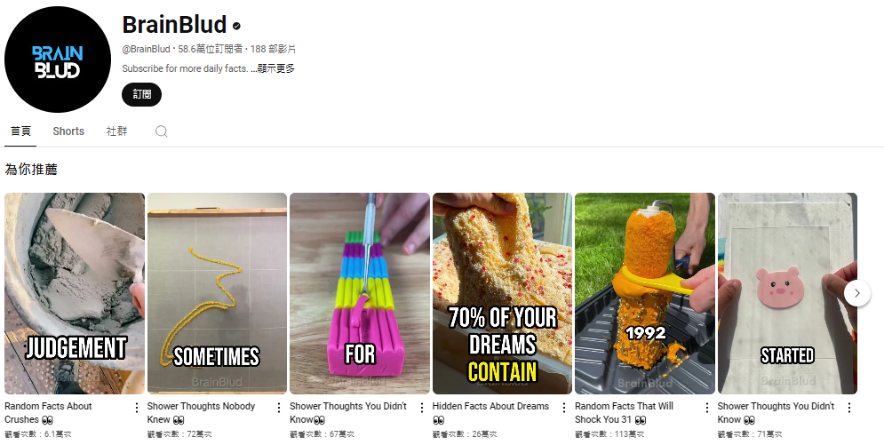
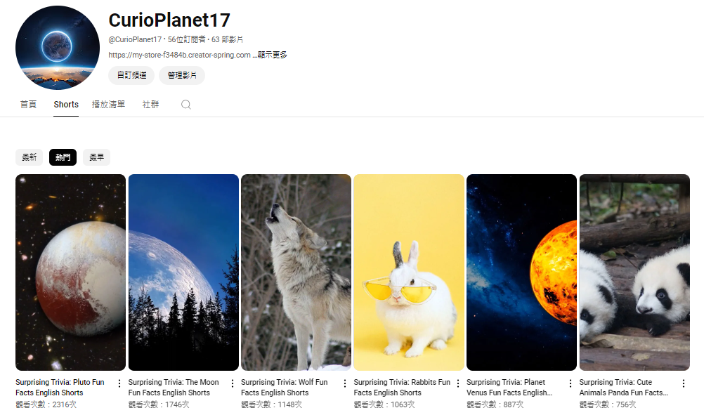

自從人工智慧問世後，不論是長視頻、短視頻還是文字創作等各方面都迎來了全新的樣貌。近年來，短視頻更成為主流，可以快速吸引觀眾注意力。而Fliki AI正是一款能夠讓這一切變得簡單又高效的卓越工具。Flki AI是一個強大的文字轉視頻工具，它能夠幫助你迅速將文字內容轉換為引人入勝的視頻。無論你是一個內容創作者、市場營銷專家還是業務人員，Flki AI都能為你省去費時費力的視頻製作過程，讓你專注於創意和策略方面的工作。 這款工具不僅提供了豐富多樣的視頻模板和效果，還採用了先進的人工智能技術，讓你的文字轉化為生動的視頻內容。你只需輸入需要轉換的文字，Flki AI就能自動生成專業水準的視頻，無需任何視覺設計或編輯技巧。 Flki AI還支持多語言文字轉視頻，讓你能夠更好地融入全球化市場。無論你是想制作招聘宣傳視頻、產品介紹視頻還是營銷廣告，Flki AI都能幫助你輕鬆實現目標。 不管你是剛開始經營自己的業務，還是希望提升現有業務的可見性和影響力，Flki AI都是一個值得考慮的選擇。它的強大功能和簡單易用的界面，必定會為你的內容創作帶來更多的成功和讚譽。試用Flki AI，發揮你的創造力，讓文字與視頻完美結合。今天，小編將與大家分享Fliki AI的實測結果。
Fliki AI 是一個全方位的視頻製作平台，旨在通過簡單的文字輸入來生成專業質量的視頻。用戶只需提供博客文章的連結或直接粘貼文本，Fliki AI 就會自動總結內容、選擇合適的視覺素材，並添加逼真的語音解說，確保能夠用最自然的方式呈現您的內容，讓視頻製作變得輕而易舉。
市場上有很多使用AI生成短視頻的案例，這些視頻受到了觀眾的喜愛。以下是兩個成功的案例：
歷史頻道：一個專注於歷史內容的頻道，其訂閱量已達32.2萬。這證明了AI生成的視頻能夠在特定主題上吸引大量觀眾。
趣事頻道：一個揭露有趣事實的頻道，其訂閱量已達58.6萬。這進一步顯示了Fliki AI 在創造吸引人的內容方面的潛力。 
通過這些成功案例，我們可以看到 Fliki AI 在全球市場中的應用效果。更多成功案例可以在 YouTube 上找到，幫助您了解 Fliki 在不同領域中的實際表現。
以下是我使用Fliki仿照上述短影片手法製作的短視頻，我認為使用Fliki製作視頻的確是簡單又高效。SEO優化對於網站經營者來說非常重要，而我此次主要目的是Fliki AI工具實測，並未針對SEO進行優化，但視頻播放量依然達到上千次，這證明了Fliki作為視頻製作工具的優越性。

Fliki AI 是一款功能強大且高效的視頻製作工具，無論是創建廣告、教程還是其他類型的視頻內容，都能提供優秀的性能。它的多語言支持、豐富的媒體庫和高品質的AI語音，使得視頻製作變得更加簡便。對於那些希望節省時間、提升SEO並製作高質量視頻的人來說，Fliki AI 無疑是一個值得考慮的選擇。立即點擊連結到 Fliki 網站免費試用，體驗這款強大工具帶來的便捷和效果吧！
想要更深入了解更多實用網站嗎？請點擊以下連結閱讀更多相關文章。點我前往更多文章